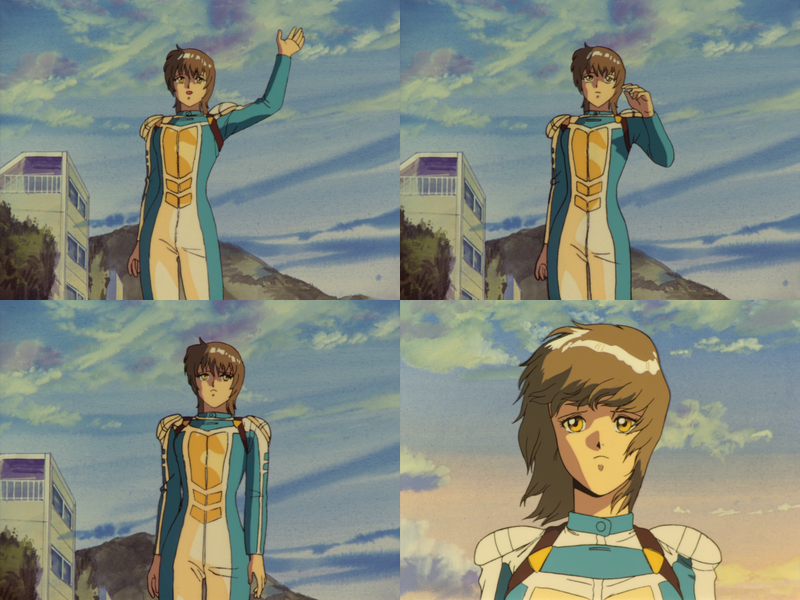

"We Shouldn't be Born to be Sad:"
My Reflections on Bubblegum Crisis, Episode 5:
"Moonlight Rambler" (1989)
01 Feb. thru 04 March 2022 (ongoing) [Permanent link]
This article is still under the final stages of construction, so
there may be disconnected paragraphs and other errata present. Please
keep that in mind if you read this before I finish cleaning it
up. After working on this for two weeks, however, I think it's
pretty much done because I can watch the episode without thinking of
much else to write about now.
It's my first post of 2022, and it's also my first post that isn't about about technology!
…Well, okay. That's a lie. It kind of is about technology. It's just more about science fiction, theoretical situations, and philosophy. I did originally say I might not do much non-tech stuff on my site, but here we are. Something finally motivated me to do a thought dump on philosophy.
This post is primarily about an anime from 1987– specifically, one episode from 1989– and the thoughts that it provoked, both as I watched it and afterwards upon reflection. It hit me harder than anything I've watched has in a very long time. It elevated the series from being "something with an art style I appreciate" to being "one of the best things I've seen."

This is a long post, so I am making a table of contents to facilitate navigation.
Table of Contents
- Foreword/Spoiler Warning
- Reflections & Analysis
- Overcoming the Uncanny Valley
- Altruism & Self-Sacrifice
- Machines that Bleed (…and Cry)
- Born to Kill?
- Cruelty
- Chobits
- The Imitation Game (not the movie)
- Androids in Human Suits… and Humans in Android Suits
- Self-awareness
- The Right to Happiness
- The "Sunset Scene": Alienation and Belonging
- Cross Comparisons with Other Media
- Machines Don't Know Evil; Humans Make Them That Way (Chrono Trigger)
- Comparisons with Phantasy Star II (1989)
- Construction Zone – outlines, notes, and errata
Foreword/Spoiler Warning
If you enjoy manga or anime, especially from the 80's or 90's, or if you liked Blade Runner/Do Androids Dream of Electric Sheep (or Chobits) a lot, I would suggest and recommend that you stop reading this post for now, and go watch the show up to this episode (or at least watch the episode itself), and then return before I spoil it for you. I was glad to experience this with nothing spoiled for me. It made it easier for me to have reflections on it that are genuinely my own.
…Well, okay. That might also be a partial lie. Even though I was not spoiled on this episode, I have already been deeply influenced by things like Astro Boy (the manga), Karakuri Odette (the shojo manga), and the aforementioned Chobits. Those are three manga I've read specifically because they touch on the subject matter this episode focuses on, and each in its own way. Maybe I'll make this into a series of posts.
I will also be spoiling details of other literary works and video games, so proceed with caution.
Also, do note: I have not finished the series. Episode 5 was so good that I had to take a breather, and I also re-watched it a couple times. The episode feels like it has a lot to pack into its time window, but the ideas are strong. If more stuff happens on this topic (I think there's a decent chance of it – but there's only three more episodes to go…), I will be over the moon.
I often actually dislike science fiction for its tendency to focus on fancy looking technology, terror/horror, or other sensationalism, overlooking the philosophical questions of humanity that great science fiction can effectively reflect on. If you'd like to know what I consider 'great science fiction,' I'd say Ray Bradbury was good at writing that discussed things in very relatable human terms (The Martian Chronicles, Fahrenheit 451), as was Kurt Vonnegut (Cat's Cradle). It's the ability to connect humanity as it is now to the future - and recognize that regardless of when we live, people will still be people for better and worse - that distinguishes 'great science fiction.' I think this episode does that with aplomb.
If you don't want to watch all of it, at least watch episode 1 (which is longer than any of the others) to get an idea of the characters and setting. Actually, you don't even have to do that; I think you'll get an idea for the general setting and names of things if you watch the opening performance (about five minutes).
With the exception of the very beginning of the opening, before the song kicks in (which I liked a lot; it was very atmospheric and gave a sense for the scale of things), this video on YouTube has the entire thing. This video is also the thing that made me decide I wanted to try watching this anime. It's pretty rare for me to make that decision, but I am just enamored with the art style of this show (and much of the other manga and anime of the time period). The fact that it is all hand drawn and colored just adds to the appeal; this series has gorgeous colors and a fantastic setting.
{kind=link}
Sorry for the lower than normal resolution. I don't want to get any trouble (not that I think anyone would really DMCA me for one or two higher resolution shots - but you never can tell). At least this way, I can claim "fair use." I also submit to the copyright holder(s) that this series doesn't get very much attention, being over 30 years old, and so you might want to just consider this free marketing.
So, Hello, and welcome; Welcome, to those of you who have no inclination to watch the show at any point. Welcome, those who have seen it already. And finally, I extend a warm welcome to theoretical person out there who wants to hear what some random guy in Indiana thinks thinks about an episode of a TV show that came out seven years before he was born. Thanks for listening to my shouts into the void.
Reflections & Analysis
Refer to the table of contents above if you're looking for something in particular. Otherwise, the real analysis begins here.

(my personal guess on the kana spelling is 「シルヴィ」.
I am going to try to avoid just turning this into a plot summary. If you want to know about the plot, I suggest you watch the episode. It does a nice job explaining things for the viewer, in my opinion. I've shared this episode with a handful of friends, and they all seem to agree that everything comes together pretty cleanly.
The crux of this topic that I kept harping on about, but never properly defined above, is of what can we call 'human?' I've had a few different lines of questioning come to mind while thinking about this episode and writing this post. I'll touch on a few of these, but I'll mention the rest in case the others get you thinking.
- Is something's 'humanity' totally biologically based?
- People anthropomorphize lots of non-human things and project their thoughts onto them.
- Likewise, some biological humans do monstrously evil things to each other.
- Do you even have to be a human in order to have the rights of one in human society?
- Moreover, can humans be expected to adapt to such a reality? It seems like it would be so easy to just fear them.
- Should such robots be given a separate status? Does one have to be alive to be a human? How do we define "life?"
- Aren't sterile people "alive" despite not being able to reproduce? I would say they are, but the commonly accepted definition I was taught in school seems to say otherwise.
In short, then, we are addressing the quintessential "what does it mean to be human?" question.
My theory is that people consider other things to be "people" based on our ingrained social behaviors and our desires to interact with others. Most of us don't function well in complete isolation. If I could be a total shut-in, and have all the time to do my tinkering with electronics or whatever, but I could never invite someone over or go to see anyone else, I'd rapidly become depressed. It has happened to a lot of us during this unending COVID-19 pandemic, myself included. But no matter how much I do need some degree of social interaction, it can often be supplemented by the sorts of attachments we get to inanimate objects and non-human animals.
People can get attached to all kinds of things that aren't humans. People often feel that they are friends with their pets (especially dogs), and others have hobbies and passions like a musical instrument, or painting, or even working on a project car. I was devastated when my silver '91 Volvo got wrecked. Not only because I was out a car, but because I was out that car. I'd spent a lot of time and effort making it as good as I could - trying to ward off the rust, hand-drying it after a wash, and generally taking better care of it than I took of myself. I think this is related to the idea of attachment formation, or maybe "imprinting."
Overcoming the Uncanny Valley
This behavior of imprinting, and of applying our own emotions or thought processes to explain the behaviors of other animals, is part of why I think people can be so sentimental (which I think is a good thing). But there's a strange thing that I and many others have noticed, where the closer something is to looking like us, the more we get unnerved by it. This is termed the "uncanny valley." That is, the closer to human something gets, the more we fear it as inhuman– at least to a point. After that point, they are imperceptibly different, and they become effectively seen as people.
Boomers (ブーマ, "buma") in Bubblegum Crisis seem to exist on both sides of this uncanny valley. Many of them appear normal, but then their skin comes off (all the time), or metal blades slide out of their fingernails (episode 2, I believe), or they turn into some form of huge twisted metal monstrosity (episode 1), and things become incredibly unsettling. But those experiences in past episodes are why I find Sylvie, and this whole episode, so interesting.
They took the anthropomorphization of robots to a level I'd never even thought of before, by giving them blood. Sure, I've seen Terminator, and I remember that gruesome scene. But there, it was played for the unease. Similarly, Shigesato Itoi once said that the logo for the game Mother 3 was a fusion of metal and wood because it is an unnatural pairing, befitting the chimera that the game features. It was also intended to make people uneasy. I can see what he means; it's a weird dichotomy.
Not so much here. Here, the fusion of (wo)man and machine is done so deeply that you might not even be sure what you're seeing at first. At the very least, I was uncertain for much of the episode. By hiding the robotic parts of these boomers, Bubblegum Crisis forces the viewer to anthropomorphize them by default. The discomfort is avoided, because we can't see the metal that would make us uneasy. Instead, all we see is blood and the other things that we would typically associate with biological humans.
Altruism & Self-Sacrifice
Nam/Namu(?), the other gray haired girl near the beginning of the episode, and also seen below, displays an act of pure altruism when she pushes Sylvie and Anri into the ship as debris falls from above, sacrificing herself in the process.

This is the first selfless sacrifice by a robot that I've seen in this series.
I've heard different theories (mostly from NPR's Radiolab program, and TED talks) about why people act altruistically. One I've heard multiple times is that "it helps to ensure that the species as a whole survives." I think that's a load of garbage. We are social creatures, and while it may be fair to say that a lot of things we do as groups are evolutionarily inclined, if there was a "self-sacrifice gene" one would expect that it would be naturally removed from the gene pool relatively quickly. Not everything we do has to have cold, rational explanations.
I think this kind of sacrifice is an independent thought. I'm sure there are some that have done it because they don't value their lives as highly as someone else's, or, in Spock's words, because "the good of the many outweighs the needs of a few" (or one). But for me, I don't think I have the right kind of mind to coldly analyze costs and benefits when a truck is barrelling towards my friend.
Putting myself in these shoes, I think the only thing I'd think is "I don't want to see my friend(s) get hurt." I don't even think I'd get as far as "how can I live with myself otherwise" before it would be too late to do anything but watch.
Machines that Bleed

We also see their remarkable fragility - at least when compared to the boomers from episode 1 that can move without a head.
The moment above is the moment when my brain started running at full-tilt. I wasn't sure if what I was seeing was simply something "electrified came down from above", or if it was a sign of something else. Having just seen what I consider to be the ultimate act of love, Seeing the blood, feeling the sinking in my stomach, and then seeing the unexpected sparks "sparked" something in me.
Unlike the discomfort I felt in the case of Mother 3, here (well, really later in the episode, I was still unsure at this moment) I felt something more complicated. It reminded me a bit of the feeling I sometimes can get when I hear a truly beautiful piece of music. I experienced something that was beautiful in its sadness— something cathartic, even. I think some would call it "divine," but I didn't feel like I was connected to a higher power or anything. I just felt a huge knot of emotional turmoil.
This feeling of awe (and anticipation) continued to grow throughout the entire episode from this point. I knew it was going to end in tears – I just wanted to know how it would get there. But my sadness grew alongside my awe throughout the episode. Even as I write this, about a month after first watching it, I still feel something.
In short, it was an extremely bittersweet feeling, the kind that I get when I witness something beautiful. It felt like it filled some void I didn't know I had... in the end, it's the kind of thing I wish I could cry more about, because the crying feels so good. I hope I'm making sense.
I wouldn't necessarily call it "sadness," because I love this imagery. It's sort of a sublimely beautiful idea for me, for reasons I don't feel totally equipped to explain.
Anyway, the moment depicted in the image above is also the moment when this episode started signalling to me that it was going to have a very different tone than the previous ones. I noticed the spark coming from her back; I sort of just assumed it was because something that fell was electrified, but at this point, my mind also started entertaining an alternative explanation: that the electricity came from inside Namu. Since this is one of my favorite things to think about, I started feeling excited as well. It's what I'd been hoping this series would do since the beginning.
Actually, the show had already come sort of close on one prior occasion. In the opening of episode 2 ("Born to Kill"), it felt very clear to me that Genom was essentially desecrating the grave of a young girl and stealing from her corpse. I can't imagine that it wasn't on purpose. Sylia even said "to us, she was just a little girl who needed protecting;" I think she even said that next time they should make the robot look like a dog instead.
{kind=link}
Born to Kill?
Up to this point in the show, Boomers had only really been portrayed as monsters wearing human skin (with the possible exception of Cynthia, who we really didn't get much personality from before her demise in the first episode). The other boomers in episode 1 didn't seem to mind much when their companions were destroyed; they seemed to not have anything like an emotional attachment to each other.
But this episode suggested an alternative future for robots. Instead of being war machines, they could be a sort of extension of humanity. The "33S" type robots are physically fragile things by comparison, but with willpower as strong as any person's.
These robots are clearly not made to be fighters. They were made to seem as human-like as possible, which was done so well that they even die like humans. When Lou (blonde) gets injured by the Doberman (basically a killer robot sent to prevent their escape), Meg runs to her. In the face of certain death, instead of running, Meg pulls lou closer.
{kind=link}
To me, this is a profoundly human expression of love and compassion.
This scene comes right on the heels of the sparks from Namu's back. I think that the blood was the overriding factor for me in these scenes. Though I kept those sparks in mind, everything about this situation seems very human for a series that previously has not shown many robots in this kind of light. I am so glad this episode exists. I'm glad, even though hurts a bit for me to write about, and I feel like I can't even adequately describe why I'm so glad.
In Bubblegum Crisis, the really interesting thing is that they never let you see what these 33-S characters look like under their skin. I think this was deliberate. The sparks in this scene are enough to suggest they might be robots, but the blood makes you unsure. I think the overall point is to make people worry about it, but in the end there's just so much human vulnerability that they show compared to all of the other varieties of Boomers we've seen so far. They are fragile. Whereas with alot of boomers just taking the head off isn't enough to stop them, these ones can bleed out. They appear to feel pain, sorrow, guilt, and a range of other emotions.
Cruelty
To me, it feels cruel to give them such sentimentality and fragility, especially since in the case of these 33-S's, they were originally meant as sex robots. For this reason, they had to feel warm to the touch, and have something like flesh, and a pulse. So, given that you percieve them as human or sufficiently close, it seems clear that they are basically "born" into sex slavery.
Beyond that, it means we're just offloading our own burdens onto something else so that they can do something for us. We give them both the ability to feel pain and emotions, we give them the ability to desire things and make their own decisions, and then we force them to serve us. How is that any different from slavery?
I mean, maybe that would help solve the human trafficking problem (I highly doubt it; people can be terrible and would find some reason to continue being terrible), but if we make them behave like us to the point of giving them free will, then what has really changed? Nothing– except that now we can feel better about their subjugation, since they are not "people," but rather a consumable product.
So, to me, at least, that's a sickening concept. Especially because, if AI can get that far, I could actually see this happening in the future (even if not by 2032, necessarily). The power of money is such that I am certain someone would come forward to fill that market.
Chobits
On the subject of emotions, it might be time to bring up Chobits now, since that was a prior influence on my thoughts on this subject.
Unfortunately, Chobits has a bit of a reputation. There seem to be a surprising number of "neckbeards" who want robotic girlfriends because of their misogynistic views or bad experiences with living human women. This is a shame, because the manga itself is quite thoughtful and asks a lot of tough questions about how we would treat such robots (and was also authored by women). It was one of those early things I read that shaped my impressions of what a good manga could be, along with "Astro Boy" (Tetsuwan Atom).
Not to get too deep into it, the major take-away I had from Chobits was a question: even if the 'feelings' of robots were programmed by a person, if they feel real to others, and they react appropriately in the right situations, does that distinction really matter?
The Imitation Game
(not the movie)The "imitation game" approach to the Turing test, whereby a computer and a human are both asked questions and tasked with responding, and an observer tries to tell which is which, is a test that at least in theory I can ascribe to as a measure of "human intelligence." The episode makes it clear that sylvie managed to pass this, to the extent that even with the full knowledge that she is a robot, Priss treated Sylvie's death as the loss of a friend.
When Sylvie asks Priss to kill her, Priss's shock and confusion is palpable. Her job is destroying robots, but she clearly feels differently about this one (even though she also was attacking people).
{kind=link}
Priss sees this request not as being asked to destroy a machine, but as being asked to kill a friend.
In a moment of shoc, confusion, and pressure like Priss is facing here, she ends up doing what was asked of her to save the city. But I have no idea what kind of turmoil this could bring out in her in the last three episodes (I hope they don't just ignore that this ever happened going forward).
In the end, it seems quite clear to me that Priss doesn't care about Sylvie's "humanity," or lack thereof. Priss had already formed an attachment to her, as one would with any other close friend. For that reason, I think she passed the turing test with flying colors.

Androids in Human Suits… and Humans in Android Suits
In order to stand a chance against hostile robots and technologies, in Bubblegum Crisis people have to use the same technologies which gives the robots their strength to level the playing field– effectively taking the characteristics of those technologies onto themselves. The K12 operated by Leon in this episode is a larger, boxier, less "human looking" form, but the more sophisticated combat (戦闘/sentō) suits donned by the Knight Sabers essentially give them a robotic exoskeleton while letting them move normally. So from this perspective, the main difference between them and boomers is that boomers are metal on the inside and skin on the outside, while they are skin on the inside and metal outside. It's a strange reversal, where biological humans appear less conventionally human than robots do.
As these technologies become increasingly prevalent (and we become ever more dependent on them), in other words, we become cyborgs. Even if they contain no biological components (though Sylvie does— blood at the very least, and one would assume something like flesh as well), we become closer to them than we might admit to ourselves. Even now, the rise of "Internet of Things" and corporate surveillance devices like Echo (as well as things like augmented reality and even smartphones) signal (warn?) of the ever more prevalent requirement for people to embrace technology to be considered useful members of society.
That doesn't mean that we necessarily have to become luddites in order to be "human," but it does mean that we might need to consider re-evaluating our definitions of humanity (especially if robots as sophisticated as those in Bubblegum Crisis existed).
In a combat suit, Priss looks less like a human than the robot she is grieving for. Isn't that strange? I wonder if that was an intentional decision, or merely coincidental. I hope it was on purpose, but even if not it's something that I think would be fascinating to think more about.
Self-awareness
Computers cannot know their own methods of operation. For instance, a program cannot know how its CPU is laid out physically, or how its own instruction set is implemented. Likewise, humans don't really understand our own brains. In fact, we dissociate our sense of "self" from that of our brains, because in reality the brain itself is what is thinking "my brain." It is extremely difficult to turn compiled code back into human-readable code. So, in other words, a robot does not know inherently the reasons why its thoughts or 'emotions' work the ways that they do. It only knows that it has them, and that some are favored over others. isn't that also a lot like us? All we can do is theorize why people would act selflessly, or why people are protective of their children, because we don't really know from empirical information.
The Right to Happiness
No matter how much we tend to anthropomorphize robots, objects, and other, non-'human' animals, we (well, most of us) don't really see them as equals. We don't afford them with all of the same rights that we have.
When you think about it, it seems probable that a fully grown dog or dolphin would be smarter and more "sapient" than a newborn baby, right? They have experienced some part of the world, and certainly have more of an idea of what it is than a newborn. But because babies tend to become more sapient over time, and also tend to become "adults" eventually (and because they are our offspring), they are given higher priority. This is understandable, since it's as much an instinctual thing as it is a social thing to care for your own child.
But, what if what you deem to be your child wasn't actually considered to be a person at all?
You probably want your child to be happy, but if your child's happiness is programmed to have similar requirements as a human's, that happiness can be hard to come by, and mercurial when it is found. And a lot of happiness comes from the validation of others (for me, at least). People who are shunned or seen as abnormal often suffer from depression.
Sylvie was brought into the world, and given something approximately equivaloent to sentience, only to be used as a disposable object (sold for sex) and denied the opportunity to find happiness. It'd be like having parents that didn't love you.
This is where the title of this post comes from - and also a lyric in the song that plays during the opening credits ("Mysterious Night.") I think, of all the human cruelties responsible for Sylvie's very creation, that is what hurts most.
I am not about to get too much deeper into the argument about what 'sentience' is, only state that if to all external observers something appears to have sentience, it might as well have it. At some level, we're just analogue chemical computers, anyway. Whether we were designed or not is irrelevant here.
I also don't want to get too much into the "playing God" aspect of this, primarily because I'm an atheist and would therefore would feel sort of awkward trying to push my opinions about something I don't really hold much stock in. But I hope that almost everyone, both those who think doing stuff like trying to create machines that can act like people are "playing God" and those who see it as an exciting prospect, should be able to agree that loving our children is important. Someone out there in the world of Bubblegum Crisis had to design these machines in full knowledge of their intended use.
Chobits had a similar thing going on, but where the inventor of all the robots wanted them to be able to be happy, too. (spoiler alert) He devised a test to try to determine if humans could accept robots and help them find happiness, too. He likewise made a mechanism to "pull the plug" if the test was a failure, rather than let them all suffer.
It's also worth pointing out that truly, no matter how much they look like us, robots can't be 100% identical to us. Things like Sylvie's "hypnosis" (I don't know what else to call it - when her eyes flashed red) or her ability to survive that motorcycle jump/ship crash are clear indicators that she can do things humans can't. But does that mean that she wouldn't deserve the same amount of respect or care as regular people, if she was living peacefully as one? I don't think it's fair to make them in our image to the extent that they behave like us socially and desire happiness, and then denigrate them as sub-human or not deserving happiness.
The "Sunset Scene": Alienation and Belonging
Besides the opening and ending, I think the most impactful moment in this episode was what I will dub "The Sunset scene." It is also by far the hardest part for me to describe what I think about it with words. But I will make an attempt to communicate whatever I can.
Sylvie knows she's not like everyone around her. She seems lonely, even when she's with others on Earth. She sees something beautiful, shares a happy moment with someone, and then something inevitably reminds her of who she is and her dire situation.

I guess this invisible rift between Sylvie and everyone around her is what I find the most wrenching about this scene. And even though I saw what was coming a mile away when the cat showed up, it still managed to have an impact for me.
In a densely packed episode, this is the only time where we see Sylvie be able to really relax for a moment, but even this is shattered repeatedly. First by the Genom building reminding her of what she has to do – and Priss offhandedly talking to her about the "boomer trouble" that they have been causing – and then by the cat.
This is Sylvie's sense of "alienation." The cat can tell (probably by scent?) that Sylvie is something different from what it has experienced before, and it won't trust her as a result. Sylvie has this deeply sad look on her face as this happens. She's just trying to be nice to the cat, but her artificial circumstances of "birth" stop her from being able to enjoy the experience. It must feel like the whole world is hostile to her very existance, like she can't be a part of it. Cursed with a "half-life." I at least would be riddled with self-doubt over something like that.
Come to think of it, this reminds me of Frankenstein's monster's story with the blind man, where he was treated kindly, but only because the blind man couldn't see that he wasn't a regular human.
I wonder if, had this episode ended differently, Sylvie could have found true happiness and made peace with her existance. She and Anri (and her companions) all display the will to live. I think that what Sylvie really needed was to be able to tell someone who she was, without having to be afraid of what they would think, or worrying that they'd treat her differently because of it. She presumably didn't know at this point that Priss was one of the Knight Sabers, but even if she weren't one I think Priss would have helped her to steal the disk anyway. It seems in-character for her - she has shown herself to be outgoing and strongly protective of her friends. Although, if Sylvie had known about the Knight Sabers already, she would probably have every reason to be afraid of them as a robot causing trouble in the city.
Obviously this is all purely hypothetical, since it didn't happen. But I want to believe that there are people who could accept someone like Sylvie for who she is. She was designed so a way that she needs social connections like people do, so she must be profoundly lonely.
I'll end this by letting a picture speak for itself.
{kind=link}
Cross Comparisons with Other Media
This brings me to some more comparisons to other media that might be of interest to you, especially if you also enjoyed this episode.
Machines Don't Know Evil; Humans Make Them That Way
A line I've long remembered from Chrono Trigger (I think it was from the Ted Woolsey SNES translation, specifically) came from Lucca.
{kind=link}
Lucca pities robots that were made to attack people. For every war machine people build, there could have been an attempt at making humanity better with technology. Instead, we use it to express our own cruelty and hatred.
The opening scenes show both sides of this coin, contrasting the staggeringly human 33-S's with the monstrous, muder-machine "Dobermans." Humanity's ability to make something good, and to make something that actively and intentionally destroys that goodness.
Comparisons with Phantasy Star II (1989)
Phantasy Star II was released the same year as this episode, as an early title for the Sega Mega Drive. While I don't think it's a fun game to play in stock form, the story skeleton is fantastic and it succeeds in cultivating a moody, somewhat depressing atmosphere of tension mixed with resignation. The game deserves far more attention than it gets. It also has a surprising amount in common with "Moonlight Rambler," in my opinion.
This section contains MAJOR SPOILERS for Phantasy Star II, an RPG for the Sega Mega Drive/Genesis.
I kind of had a bad feeling about what was going to happen to Sylvie,
starting pretty early on in the episode. She was a new character,
and in previous episodes I had noticed that that isn't a good sign in
this show. I think most of them have died, so far - with the exception
of the old man – Sorry, Hasage,
J.B. Gibson, and his girlfriend, from the previous episode.
I hoped I was wrong, of course. But, I mean, I played Phantasy Star II. That game has a very similar moody and dark feel to it, like this episode (that was released in the same year).
Now, in my opinion, the game itself isn't very fun, but I love the story and character designs. So if you actually want to torture yourself playing it like I did, you should probably skip to the "end-of-spoiler" header below.
"The Human Who Was Not a Human:" Sylvie & Nei
Sylvie has an analogous tragic character in Phantasy Star II, named Nei. Nei is a half-human, half-monster that was created in a laboratory and escaped. She was the size of a small child when she met the protagonist, Rolf ('Eusis'/'Yushis' in the Japanese version), but due to her genetically engineered nature she grew to adult size in a period of about six months after meeting him.
{kind=link}
Nei has a fairly similar alienation to Sylvie, but unlike Sylvie she cannot hide her physically 'inhuman' nature. So her loneliness is differently expressed.
Source: @yoshibon_club on Twitter.
Nei's case is different in three primary ways that I can figure: firstly, she cannot hide that she is not a conventional human, due to her ears. Scondly, she is genetically engineered, and contains human genes mixed with those of monsters.
Because of this, most people are afraid of her and shun her. There's a very short text-based adventure game Sega made in the early 90's that follows this early, pre-main-game story. It's a very sad little adventure, but it gives a good feel for what Nei's early life must have been like. Fortunately – and this is the third point that differs– she meets a wonderful person who lets her live with him and who raises her like a younger sister. This is of course Rolf/Eusis. I'll probably just say Rolf if or when I mention him again for simplicity.
Usually I don't care for things like prequels, but this one actually does a very clean job of tying things into the main game's story. It's also much easier than the main game, so if you have an hour or two (at most) to kill, that text based adventure might be worth a play.
The main thing the text game succeeds in doing is showing what strikes me as relatively true-to-life depictions of how real people treat those who are different from themselves.
Anyway, the one good thing is that, for six months or so (half her life, up to that point) Nei had a home and someone who cared about her. She was probably happy for the most part during that time. But then, as things start to go wrong across the planet, things start to go wrong for Nei, too. In fact, she gets killed by what appears to be her twin.
Her twin, "neifirst," never got that human compassion. Her only experiences with humanity have been pain and grief. Because of this, she has come to hate humans. She has been sabotaging the climate control system on the planet that keeps it from reverting into the desert world it was during the first game. Rolf and Nei and company discover Neifirst, and Nei begs her to stop. But Neifirst's hatred is too strong, and the only way to stop her is to attack her, which Nei realizes she must do.
She is mortally wounded by Neifirst. In a rage, Rolf and the others step forward and beat Neifirst down, but it's too late to save Nei.

It's too bad this game will never get a (good) remake or update.
I played this game a year or three before watching Bubblegum Crisis, and it took me a while to make that connection, but once I did it was hard to forget. I feel that both characters are filling the same sort of role of an "alien" who wants to be accepted and loved, and who is more human than most people recognize.
Construction Zone
{kind=link}
The rationale for why they'd have blood also worked well. It was such a brilliant idea and execution that I'm still freaking out about it a little.
----Article under construction: drafting area----
* Bleeding: blurs the line between humans and robots further.
An excellent literary device.
* First time in the series I can remember that robots have been
proper protagonists. I was starting to wonder. Though I guess
Cynthia was sort of a victim.
* It's incredibly cruel to make something, give it essentially life
(the ability to make its own decisions, to learn, everything short
of reproduction) and then essentially enslave it - in this case,
sexually. Is it any better than enslaving a biological human?
* Don't they deserve happiness, if we give them the ability to express
emotions - regardless of if we consider them "real" or not?
* Computers cannot know their own methods of operation. For instance,
a program cannot know how its CPU is laid out physically, or how its
own instruction set is implemented. Likewise, humans don't really
understand our own brains. In fact, we dissociate our sense of "self"
from that of our brains, because in reality the brain itself is what is
thinking "my brain." It is extremely difficult to turn compiled code
back into human-readable code. If a robot doesn't have access to its
own "source code," and doesn't have a way to introspect itself like
that, doesn't that just make it even more like us?
* Obviously, robots don't have to follow the "three laws," so some
at least are very close to being people. I would consider them
people. Sylvie died a human.
* They made the conscious decision to never show the mechanics under
Sylvie's skin.
* The cat. How lonely must it feel to know you aren't "really" a
person, but having to either completely ignore that side of yourself
or else risk losing people you care about?
Sylvie's sad stare when the cat is hissing at her says so much for me
without her actually having to say anything at all.
-- Also, it sort of gives a feeling of isolation. Isn't it kind of like
Frankenstein's monster's visit with the blind man? Being treated
kindly, but only as long as no one knows you aren't a human?
-- Even if Priss would have accepted her true nature, Sylvie has no way
of knowing that.
Had Sylvie been less afraid of losing her friend, and had revealed
at least somewhat who she was, there's a chance she could have
gained an ally for her break-in, and maybe even help for Anri in the
meantime. I don't think Priss is the type to turn on a good
friend without hearing them out... Although on the other hand, that
could also be like saying "hey, I'm a boomer, and also I killed at
least four people." Even if Priss weren't one of the Knight Sabers,
that would be a red flag for most people.
If she's as good of a friend as the episode makes her out to be,
though, I think Priss would hear her out. I'm remembering the
earlier episode (3, I think - the one where that apartment gets
demolished and Mason dies). Priss hates Genom and also seems to
have a strong sense of right and wrong. She likes to make money,
but she has been shown to do almost anything to help the people
she cares about when it gets down to it.
Gosh, this is complicated. Sylvie isn't an innocent character,
either. That's sort of what I like about her.
-- I just realized while writing that: Sylvie is more like Priss
than I first realized, despite their implied friendship being
spelled out for me. Both of them have strong senses of justice,
a desire for freedom, and extreme loyalty to people they care about.
-- If people had been quicker on the uptake, and Sylia had talked to
Priss about Sylvie, a lot of this could probably have been avoided.
But to make a strong point, of course, this story almost had to end
the way it did, if it wanted to have impact. Despite wanting Sylvie
to live, it would have felt like a cop-out if she'd made it through
the episode unscathed.
* Namu displays an act of pure altruism by pushing sylvie and anri out
of the way when debris falls.
* The red eye thing. Apparently boomers like Sylvie can do things
that human's can't, too. I think that is the only time they
show Sylvie act distinctly inhuman in the entire episode. It's good
that they put it in there, because it is sort of the Astro Boy
thing. I think she wants to belong.
* It's strange that they portrayed her so sympathetically when she
is literally murdering people for their blood. She killed tons of
people so that one person (yes, I'm calling Anri a person, based on
the assumption she has a little depth like Sylvie did) could live.
She acted like she was maybe a bit guilty about it at the club, but
not enough to stop doing it.
* Even if their emotions aren't "real" any more than human chemical
ones, and even if they **are** simpler than human ones, why does that
make what they think any less important?
* Why do we have to make robots in humanoid shapes, for that matter?
* In the end, Anri wanted Sylvie to stop, so she cared about humans.
One can assume Sylvie also did, in the end, since she asked to be
killed to stop the bomb from going off.
* I guess it's sort of like the actual vampires in things like Anne
Rice books, who often hate who they are and what they have to do to
survive. Or even out of an obligation to help someone else.
* Not the first time I've seen someone get murdered and leave a
bloody mess, though. Mason in episode 3(?) is killed in an act of
apparent vigilante justice by Sylia.
* Was Leon conscious for this? did he discover (for real this time)
who the Knight Sabers were?
* I should mention Karakuri Odette and Chobits here, somewhere.
* (derailing) This is why proprietary software is bad. If someone else
holds the keys that let you survive, that level of power over you is
overwhelming.
* What's up with Daley? I think I know, but I'm not certain. Not
that it especially matters for the episode, but Daley is certainly
a character. Does he have a relationship with Leon, or is he just
hitting on Leon? Does that mean Leon is bisexual?
- Why does this matter so much to me?
- Oh, right, because 1980's Japanese culture (and even some of the
present culture) is often homophobic.
(derailing a little) The art style is gorgeous.